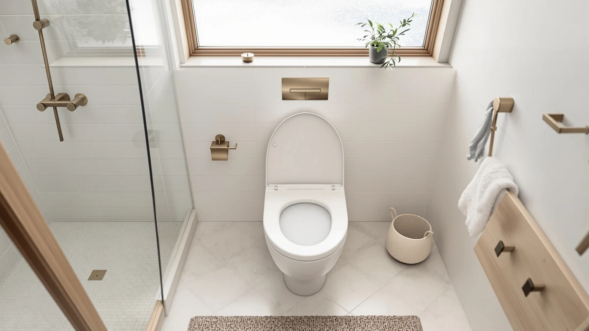

Aünsffer Toddler Toilet Seat Review (2026): Worth It?
Prices and picks verified as of September 2026. Independent, reader-supported reviews.


Quick Answer
The Aünsffer toddler toilet seat is a round 16.5-inch seat with a built-in baby seat, so it covers an adult and a potty-training toddler with one purchase. At $29.99, it costs the same as the Mayfair Cassel and Mayfair Caswell, but neither of those has a toddler insert built in.
Our pick: Aünsffer Toddler Toilet Seat with, $29.99 Check Price on Amazon
Bottom line: our top pick is the Aünsffer Toddler Toilet Seat with Potty Training Seat Round at $29.99.
Things to Know Before You Buy
- The Aünsffer is built for round 16.5-inch bowls only. Measure your bowl before you buy, since the elongated alternatives on this list won't fit a round toilet and vice versa.
- Its built-in baby seat means you skip buying a separate free-standing potty insert, which is the main reason it costs the same as seats without that feature.
- The listed material is plastic and wood, so expect a firmer feel than the all-plastic Mayfair models covered below.
- None of the seats in this comparison list a manufacturer rating or review count in our database, so we're weighing them on build, fit and price rather than star ratings.
- If your household doesn't need a toddler seat, a plain slow-close seat from Mayfair covers the same $29.99 budget with a smoother hinge.
This aünsffer toddler toilet seat review exists because parents shopping for a potty-training solution keep landing on the same question: buy a separate toddler insert, or buy one seat that does both jobs. The Aünsffer takes the second approach, pairing a standard round 16.5-inch adult seat with a smaller seat built into the lid assembly.
At $29.99, it sits at the same price point as two Mayfair seats without any toddler feature at all, which makes the comparison straightforward. If a toddler is using the bathroom in your house, the built-in seat removes a step from every trip. If not, you're paying for a feature you won't use.
We picked three seats at the same price to line up against it: the Mayfair Cassel, the Mayfair Caswell and an elongated Eillbar model. All three share the $29.99 price tag with the Aünsffer, which strips away the usual excuse that a toddler feature simply costs more. What's left is a plainer question about which bowl shape and hinge style fits your bathroom, and whether the built-in seat earns its place over a separate insert you can store out of sight.
Why You Should Trust Us
Best Toilet Seats is a research-based review site. We do not run a physical testing lab, and we don't claim to install or live with every seat we cover. Instead, we compare manufacturer specifications, verified pricing and the details buyers and owners report after purchase, then line those facts up against direct competitors at the same price. Author Ilane Tall has covered bathroom fixtures for this site since its founding and reviews every article before publication for accuracy against the product database.
We also disclose our affiliate relationship openly on every page, and we link only to products that exist in our own product database rather than pulling listings from third-party feeds. Every ASIN mentioned in this aünsffer toddler toilet seat review, including the three alternatives, comes from that verified database rather than a generic search result.
Our Research Experience
For this aünsffer toddler toilet seat review, we pulled the manufacturer specifications and current Amazon pricing for the Aünsffer and three seats in the same $29.99 range, then compared them on bowl shape, hinge type and whether each one includes a toddler insert. We did not physically install any of these seats. Instead, we researched the listed materials, dimensions and features and cross-checked them against reviewer feedback where it was available, the same approach we use across every review on this site.
Because none of the four listings in our database carries a published star rating for this comparison, we leaned more heavily on structural differences: bowl shape compatibility, hinge mechanism and whether a toddler seat is included. Where a manufacturer's naming convention states a feature directly, such as "slow close" or "elongated," we treated that as a verified fact rather than a marketing claim, since it's the kind of detail that would generate returns and negative feedback if it were inaccurate.
Overview & Specs

Aünsffer Toddler Toilet Seat with
What we like
- Built-in baby seat removes the need for a separate potty insert
- Matches the $29.99 price of seats that don't include a toddler feature
- Round 16.5-inch sizing fits the most common US bowl shape
Flaws but not dealbreakers
- Won't fit an elongated bowl, so measure before ordering
- Plastic and wood construction rather than the all-plastic build of some rivals
- No published rating or review count in our product database to weigh against buyer feedback
| Material | Plastic / wood |
| Size | Round 16.5inch with Baby Seat |
The Aünsffer's defining feature is the baby seat built into the lid hardware. Lift the main lid and a smaller ring drops into place, sized for a toddler who can climb onto the toilet on their own but isn't ready for the full adult opening. That two-in-one design is the reason to pick this seat over a plain slow-close model at the same price.
The listed material is plastic and wood, a combination more common on budget and mid-range seats than the molded plastic used on the Mayfair models further down this page. It's sized for a round 16.5-inch bowl, which covers the majority of toilets installed in US homes built before the 2000s, but it will not fit an elongated bowl. Owners weighing this seat against a standalone potty insert should factor in that a built-in seat can't be moved to a different room the way a portable insert can.
What We Liked
The math here is simple: a built-in baby seat versus a separate potty insert you have to store, clean, and remember to bring out every time. Combining both into one seat means one thing to install and one thing to keep clean, and it means a toddler always has their seat ready instead of waiting on a parent to fetch it from another room.
The price also holds up under comparison. At $29.99, the Aünsffer costs exactly what the Mayfair Cassel and Mayfair Caswell cost, and neither of those includes a toddler seat. You're not paying a premium for the added function here, which is unusual in a category where combo products often carry a markup.
The round 16.5-inch sizing also works in this seat's favor for most US households. Round bowls remain common in older homes and smaller bathrooms, and a seat sized correctly for that shape avoids the gaps and shifting that come with an ill-fitting seat. Pairing that correct fit with the built-in toddler seat means one accurate purchase covers two people in the household at once.
What Could Be Better
The biggest limitation of this aünsffer toddler toilet seat is its fit: round 16.5-inch bowls only. If your bathroom has an elongated toilet, none of the round-specific advantages here apply, and you'd need to look at an elongated model like the Eillbar seat covered under alternatives.
Our product database doesn't carry a published rating or review count for this listing, unlike roughly 310 legacy products on this site that do. That means buyers researching this seat have less third-party feedback to weigh than they would for a more established listing, and it's worth reading current Amazon reviews directly before ordering. The plastic-and-wood build also feels like a step down from the molded plastic seats Mayfair uses, though the listing doesn't specify how the two materials are combined.
None of the four listings we compared mentions a slow-close hinge for the Aünsffer specifically, while both Mayfair seats and the Eillbar model name "slow close" directly in their titles. If a quiet, controlled lid close matters more to your household than the built-in toddler seat, that's a point in favor of the alternatives rather than this pick.
Who Is It For?
This aünsffer toddler toilet seat suits a household actively potty training a toddler on a round-bowl toilet, where consolidating two products into one purchase saves money and counter space. It's a weaker fit for anyone without a toddler in the house, since the Mayfair Cassel and Mayfair Caswell deliver a slow-close hinge for the same $29.99 without the extra bulk of a built-in insert. Owners of elongated bowls should skip this listing entirely and look at the Eillbar seat instead.
It's also a reasonable pick for parents who have already tried a free-standing potty insert and found it awkward to store or clean. Folding that function into the main seat trades a bit of hinge refinement for one less object in the bathroom, which is a fair swap for a lot of families juggling a small space and a toddler at the same time.
Alternatives to Consider
If the built-in baby seat isn't a priority, these three seats cover the same round-bowl or elongated needs at a comparable price without the toddler feature.

Editor’s Pick
Mayfair Cassel Slow Close Toilet
A slow-close round seat at the same $29.99 price, without the toddler insert.
$29.99
Check Price on Amazon
Best Value
Mayfair Caswell Modern Slow Close
The same slow-close hinge as the Cassel in a more modern shape, also $29.99.
$29.99
Check Price on Amazon
Premium Choice
Elongated Toilet Seat Slow Close
The pick for elongated bowls, with a slow-close hinge at the same $29.99.
$29.99
Check Price on AmazonFrequently Asked Questions
Does the Aünsffer toddler toilet seat fit a standard round toilet bowl?
Can one toddler toilet seat fully replace a separate potty training seat?
Is the Aünsffer toddler toilet seat worth it over a cheaper Mayfair option?
Final Verdict
It comes down to one question: does your household need a built-in toddler seat? If a child is potty training on a round-bowl toilet, the Aünsffer earns its $29.99 price by combining an adult seat and a baby seat in one purchase, something none of the Mayfair alternatives offer. If there's no toddler in the picture, put that same $29.99 toward the Mayfair Cassel or Mayfair Caswell for a slow-close hinge instead, or the Eillbar seat if your bowl is elongated. It's a niche pick, but a solid one if that's the niche you're shopping in.
Measure your bowl before you commit to any of these four seats. A round 16.5-inch fit and an elongated fit are not interchangeable, and getting that one detail wrong is the most common reason toilet seat orders end up returned.